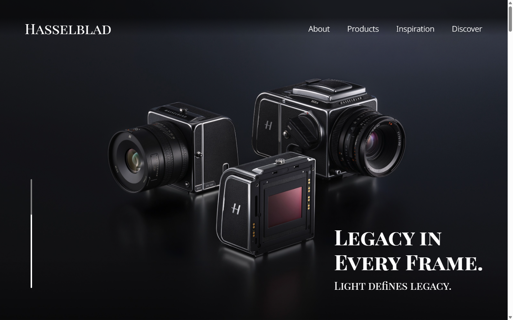
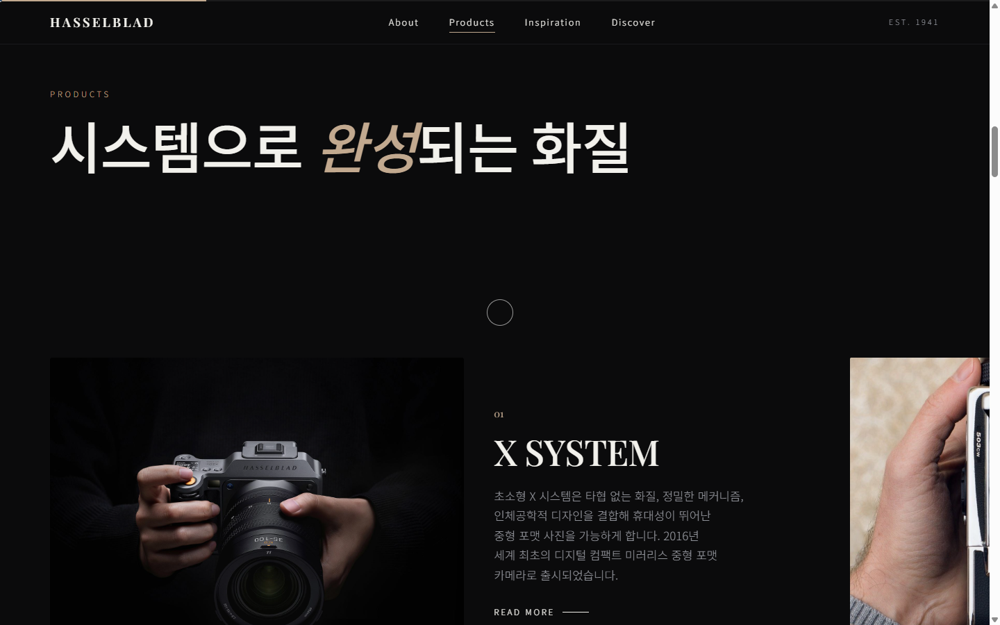
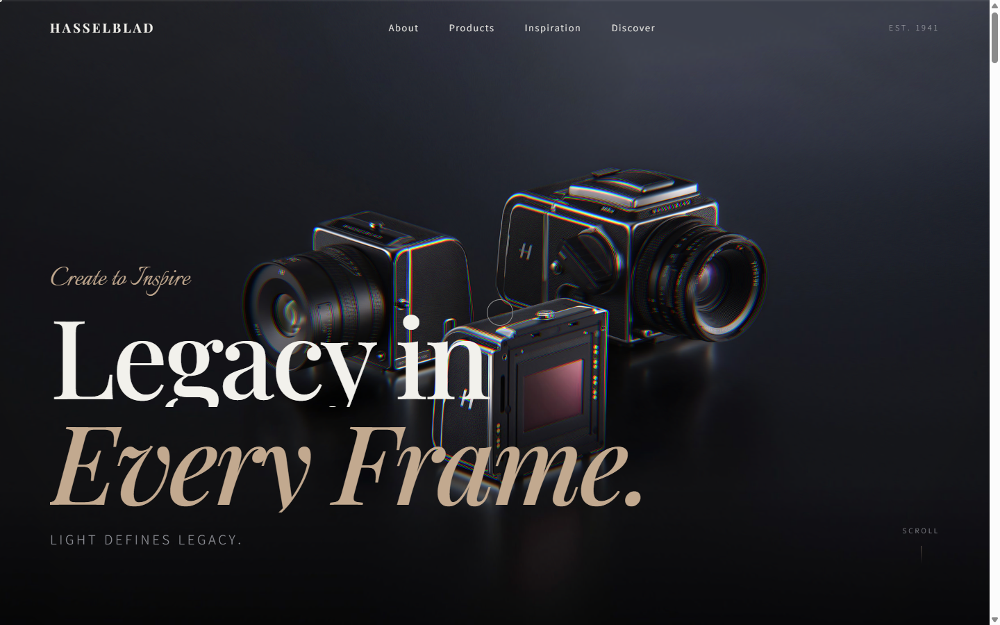
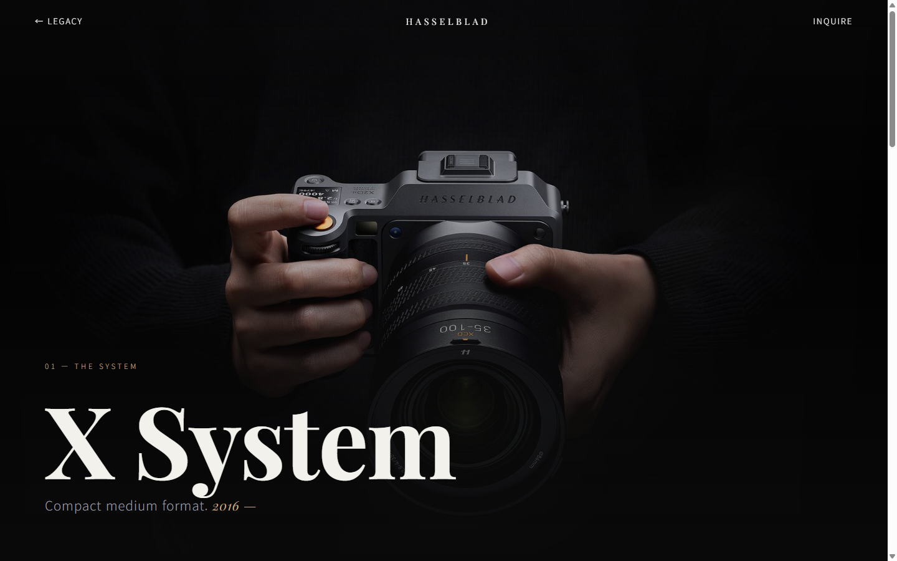
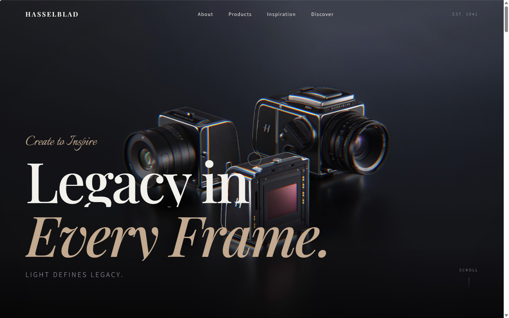

제품 상세 딥다이브
쇼케이스가 '읽기'로 끝나던 막다른 골목. → X System 상세 페이지를 신설해 '탐험'으로. 상세 없는 V/H/렌즈의 죽은 CTA는 정직하게 제거.
UX Case Study — Human × AI
기존 리디자인을 Claude Code와 협업해 UX·인터랙션·코드 품질까지 한 단계 더 끌어올린 과정. AI가 대신 만든 것이 아니라, 사람이 주도하고 AI와 함께 발전시킨 기록.

원본은 시각 완성도는 있으나 헤리티지가 분절되고, 모든 링크·READ MORE가
죽어 있었으며(href="#"), 슬라이더는 동일 콘텐츠를 반복했습니다.
브랜드의 격은 '읽어야 아는 정보'로 묻혔습니다.

#1차 리디자인은 다크 럭셔리 '브랜드 필름'으로 완성도를 크게 끌어올렸습니다 — 프리로더, WebGL 히어로, 가로 핀 제품 쇼케이스, 라이트박스 갤러리.
그러나 여정은 여전히 막다른 골목이었습니다. 제품을 '더 깊이' 볼 수 없었고, READ MORE 6개가 죽어 있었으며, 프리로더는 매번 재생되고 리사이즈는 페이지를 통째로 리로드했습니다.
→ 여기서부터가 AI 협업으로 발전시킬 지점이었습니다.
각 개선은 문제 발견 → AI 제안 → 검토·선택 → 실측 검증의 루프로 이뤄졌습니다. AI는 대안을 제시했고, 방향의 선택과 판단은 사람이 했습니다.
쇼케이스가 '읽기'로 끝나던 막다른 골목. → X System 상세 페이지를 신설해 '탐험'으로. 상세 없는 V/H/렌즈의 죽은 CTA는 정직하게 제거.
카드→상세 공유요소 모핑을 프레임워크 없이. JS로 이름을 붙이는 대신 CSS 영구 이름을 선택해 앞·뒤 양방향 전환이 모두 성립.
순환으로 끝나던 여정을 '문의'로 닫음. 클라이언트 검증 + 성공 상태. 가상 브랜드이므로 "데모 — 실제 전송되지 않음"을 정직하게 명시.
히어로가 단순 glow가 아니라 정교한 OGL 이미지 셰이더임을 확인. 교체(다운그레이드) 대신 포인터·스크롤을 따라 훑는 라이트 레이크를 얹어 'Light defines legacy'를 물리적으로.
@property --sweep + 스크롤 스크럽으로 헤딩을 빛줄기가 통과.
과용하지 않고 3곳에만 — 절제로 '빛의 여정'을 관통.
매 로드 재생 → sessionStorage 가드로 세션당 1회.
첫인상 연출을 지키되 재방문 마찰 제거.
경계 리사이즈의 전체 리로드 → 트윈 kill/rebuild + ScrollTrigger.refresh.
위치·연속성 보존.
죽은 CTA 무력화가 아니라 제거/연결. 커서 라벨 'DRAG' → 'SCROLL'로 실제 조작과 일치.
핸들을 드래그해 원본과 AI 리디자인을 비교해 보세요.



href="#")“AI가 대신 만든 것이 아니라, 내가 주도하고 AI와 협업해 더 높은 완성도로 발전시켰다.”
문제 정의와 방향의 판단은 사람이, 대안의 폭과 구현의 속도는 AI가. 그 협업의 의사결정을 결정 로그(D1–D10)로 남겨, 결과물뿐 아니라 '어떻게 발전했는가'까지 보이도록 했습니다.